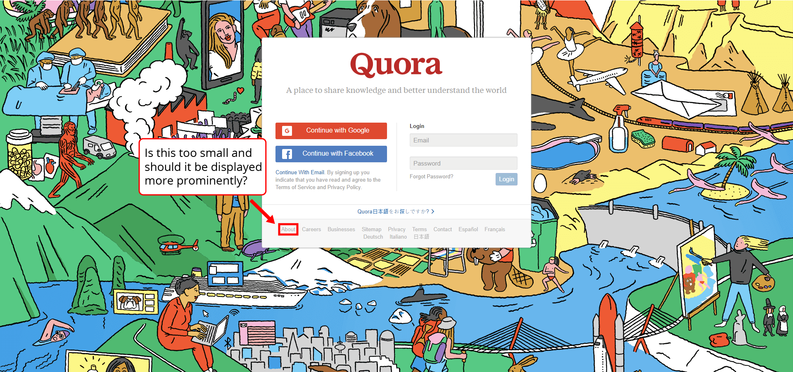
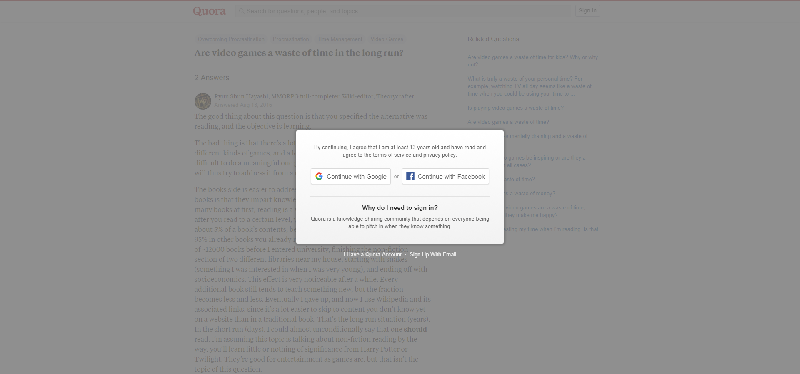
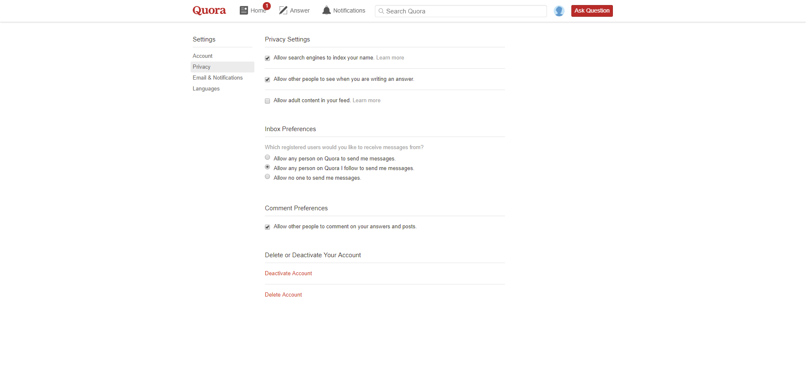
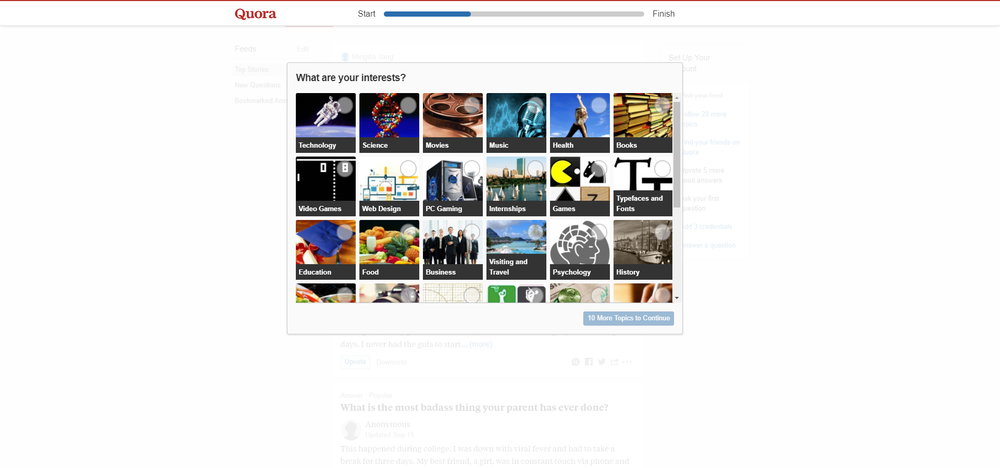
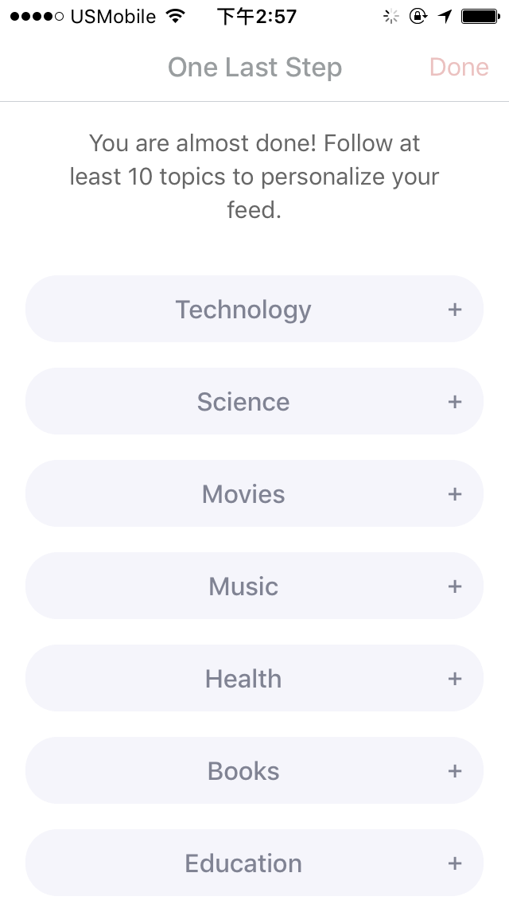
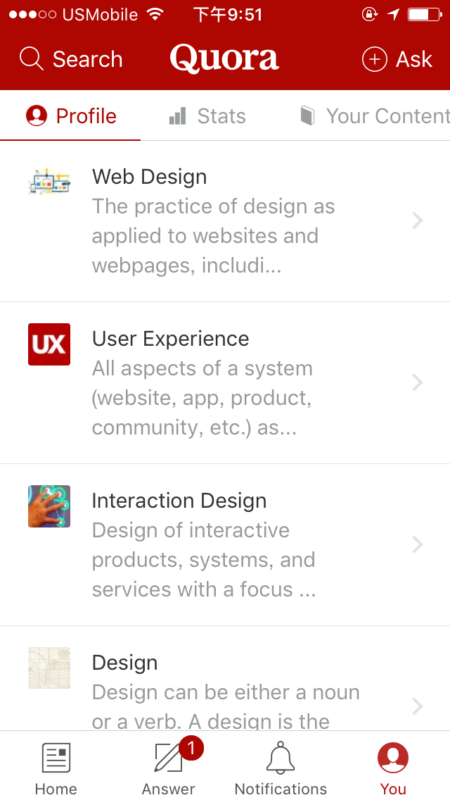
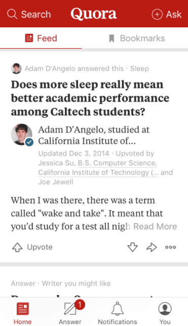

Quora is a well-designed experience all-around. From the onboarding process to continued use, I have enjoyed my time with the product. With this case study, I want to go through Quora as a first-time user and elaborate my thoughts (as a designer who is constantly learning) throughout the process. I will also offer some ideas for new features and redesigns along the way.
This is a way for me to critique a commercial product in order to facilitate my own design thinking and to understand how a popular digital product is designed.
The first thing I noticed when using Quora was that Quora strongly encourages users to create an account when using the site. Without knowing what Quora is, I am thrusted into the landing page without a solid description of the website/app.
I puzzlingly looked around and found the "About" link on desktop and "Learn More" link on iOS (iPhone 5S) and Android (Samsung Galaxy S8 Plus), which led me to the same page about what Quora is about and its mission. I think the link should be more prominent on the screen (maybe under the logo and line of text?), and should say "Learn More" on all versions.
Another thing is that whenever I want to use Quora without an account, I get this annoying popup on every other page of the site. I have to refresh my browser in order to get rid of it.
I think there is a better way to encourage users to create an account with a less intrusive popup, such as adding an exit button. It almost feels like I NEED to create an account or I am not allowed to be here. If the user really wanted to create an account, he/she or have done so after seeing this popup multiple times.
Nevertheless, the landing page on both versions make it obvious that your attention should be focusd on logging in or creating an account. Very creative background on the desktop version, too.
Next, after creating an account using my email, which worked fine, I am presented with my privacy settings...hmm, this is a bit odd.
Then I proceeded to click on one of the two "Learn more" links in Privacy Settings, but I was lead to the "What are your interests?" page. Initially I was confused by this, but I soon understood that Quora wants users to modify their preferences before using the product.
There is a search section after this screen that allows you to add your own topics, but I am proposing a redesign where this is done on a single screen.
On the mobile version, I am sent straight to the "One Last Step" page, which essentially correspond to the same page above, but it is definitely visually less intuitive and appealing. You also cannot search for your own topics.
How am I supposed to know what these terms represent without some images to complement each topic? This is especially true for someone who may not understand English particularly well.
Having accurate images allow for less interpretation. It's best to assume that the text is not there because we can't solely rely on that for users to understand what these topics represent.
The onboarding process ends here. Now it is time to explore Quora.
In this section, I want to focus on the current iOS version (5.2.8) of Quora. As of October 1st, 2017, there are 20 reviews with a rating of 3.3 for this current version.
The main positives are:Most people seem to have issues with the app's UX and performance rather than Quora itself.
I personally did not experience unresponsiveness while using the iOS/Android app, but I did notice two aspects in regard to navigation that can be improved on the app.
First of all, it seems to be a bit too complicated for me see the content that I want to see and unfollow the topics I am currently following.
As of right now, there is no way to remove a question from my feed so similar questions won't show up in the future. Unfollowing a topic also takes too many steps, and questions still show up after I have already unfollowed a topic I did not like.

What I suggest is a feature where users can double click on a specific post to remove this question from their feed. Also, there can be an unfollow button like on the desktop version so users don't have to click on the topic page in order to unfollow.
Additionally, there should be more available information when the user is searching for a specific question or topic in the search results. Having more information on display such as date of question, number of answers, and number of followers for each topic will help users reach their goals faster.
In conclusion, these are some of the design changes I am proposing for Quora so it can become more user friendly :). I will add on to this case study if I discover any more aspects of the desktop and/or mobile app that can be tweaked or improved.